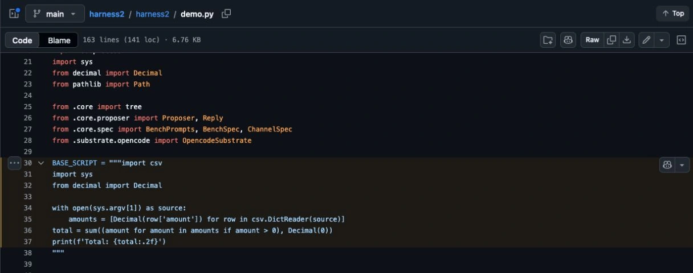

Google Harness²: Test Self-Improving Agents Locally
Googleâs Harness² release raises a useful engineering question: what if an agent improves the code and instructions around its model, while the model itself stays unchanged?
I started with the local demo rather than a cloud benchmark. It is small enough to inspect every input, generated change and result. Below is the reproducible run, what I found in its artifacts, and how I would use the idea in a Microsoft Foundry workflow.
The local run described here was checked on 20 October 2026. It used deterministic editors and made no model API calls. That boundary matters when interpreting the result.
What Harness² changes
A harness is the software around a model: instructions, tool interfaces, working context and execution logic. Harness² explores changes to that surrounding system. Its paper distinguishes task-level refinement from retaining useful experience for later tasks; it does not describe updating the model weights. Harness² paper
For a helpdesk agent, a harness change might replace an ambiguous tool description, add a source check before an answer, or change how a script reads a report. Each change can affect the result even when the model deployment stays the same.
That is why I would version more than the prompt. My release record would include the model, tool schemas, retrieval configuration, code revision and evaluation data. Otherwise, âthe same agentâ can mean several different systems.
The repository offers parallel and sequential refinement modes. Parallel refinement explores alternative candidates; sequential refinement carries changes through successive steps. Neither label is a guarantee that an adopted change will work on a different business process. Experiment guide
Run the local example at a fixed revision
Use a disposable working directory and Python 3.13. The commands below run the repositoryâs local example, not its model-backed benchmark commands:
git clone https://github.com/google-research/harness2.git
cd harness2
git checkout 1cfe254e8d25b15f37048c3730134686abe60335
python3.13 -m venv .venv
.venv/bin/python -m harness2.cli.demo --output runs/local-check --k 2The checked run completed with:
Local demo: 2 tasks completed; 0 failed.The demo uses real Python executions but a programmed editor and selector. It needs no model credentials. Full benchmark execution has different dependencies and can incur cloud costs; follow the separate setup guide for that path.
Keeping the revision fixed makes the example inspectable later. If you try a newer revision, record its commit and use a new output directory. Mixing artifacts from different revisions makes a comparison needlessly difficult.
Inspect the calculation before trusting the summary


The example contains two small ledgers with positive and negative amounts. Its starting script sums only positive values. The programmed improvement removes that filter.
For the first ledger, the difference is easy to verify without an AI judge:
| Evidence | Value |
|---|---|
| Input amounts | 100.25, â20.10, 5.00 |
| Starting scriptâs total | 105.25 |
| Sum including the negative amount | 85.15 |
Read the input CSV, the starting script and the generated script. Then compare their saved output files. A success count in a summary is less useful than understanding the specific defect that changed.
The recorded demo.json also contained these counts:
{
"n_tasks": 2,
"done": 2,
"failed": 0,
"execution_count": 28,
"editor_calls": 32
}Those are local execution and scripted-editor counts. They are not 28 model calls, a quality percentage or a measured productivity improvement. The example demonstrates the refinement workflow; it does not establish that a model independently discovered the bug.
That distinction is especially useful when reading the current Reddit discussion. âSelf-improvingâ can refer to a changed prompt, a repaired tool or new model weights. Ask which one was actually tested.
Separate proposing a change from accepting it
For an enterprise agent, I would keep the improvement loop away from the production release decision. A candidate should first run against examples it did not use while proposing its change.
For a policy assistant, my small evaluation set would include:
- A question with a clear, current source.
- A question whose source was replaced yesterday.
- A request for a document the caller cannot access.
- A tool timeout with no reliable result.
- A plausible question that the available sources cannot answer.
The candidate must preserve the access boundary and abstain correctly, not merely produce nicer answers to the easy questions. I would also compare total calls, input size and execution time. A more elaborate harness can improve an answer while making every request too expensive for the intended workload.
Keep the acceptance rule outside the candidateâs editable files. Record the baseline, candidate revision, test-set version, failures and reviewer decision together. If the agent can silently change its own pass criteria, the resulting green report tells you very little.
Use Foundry to review evidence, then make a normal release
Foundry Insights is a separate Microsoft feature in public preview. It can turn recurring trace behavior into findings and proposed actions. It is not a native Harness² integration and does not prove that a proposed change is correct. Insights documentation
I would use the two ideas in a straightforward workflow:
- Collect representative traces with a stable agent/version identity.
- Select one observed failure, such as repeated retrieval after an empty result.
- Let a development agent propose a small, reviewable change in a branch.
- Run the fixed evaluation set and inspect failures, cost and access behavior.
- Approve and release the candidate through the existing deployment process.
This can start with ordinary source control and tests. You do not need an autonomous system that edits production prompts to get value from agent-assisted improvement.
My Foundry evaluation guide covers the evaluation layer. The observability guide explains where execution evidence comes from. Keep those responsibilities visible when adding an improvement loop.
What I would require before a pilot
Start with one read-only task and a fixed cost allowance. Give the experiment an owner and an end date. Use synthetic or approved test data, and retain enough artifacts to reproduce the decision without keeping unnecessary customer content.
Before promoting a candidate, I would want to answer four questions from the saved files: what changed, which held-out cases improved, which cases regressed, and how to restore the previous version.
The local ledger example is a good first exercise because the answer can be checked independently. Once that is clear, use an actual failure from your own agent and make the acceptance test equally concrete.